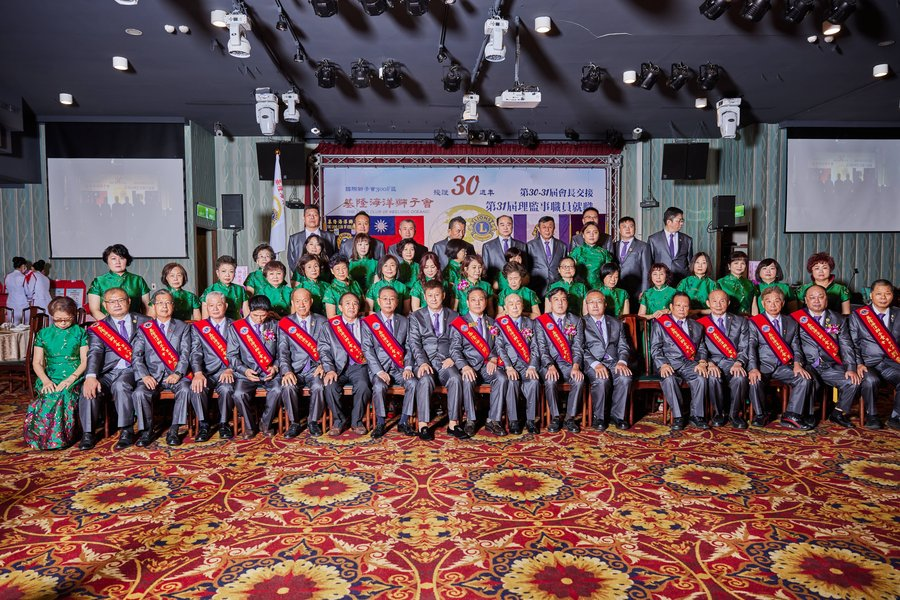
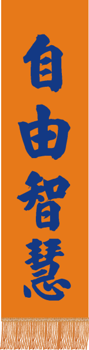
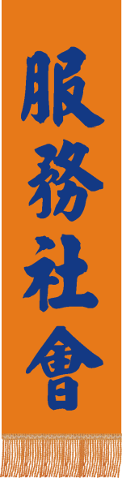
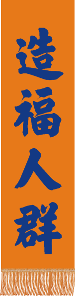
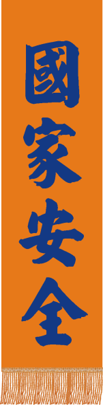
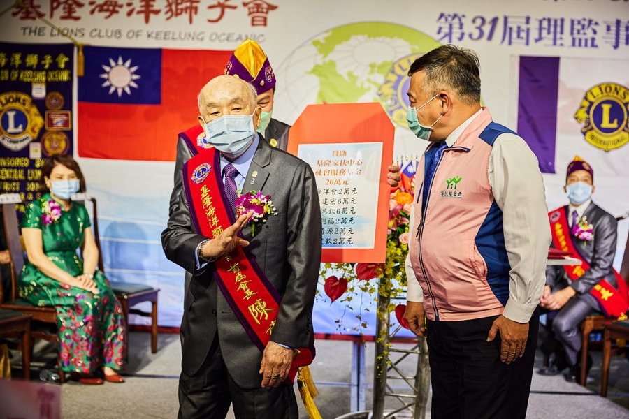
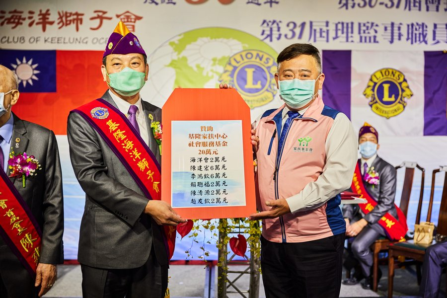
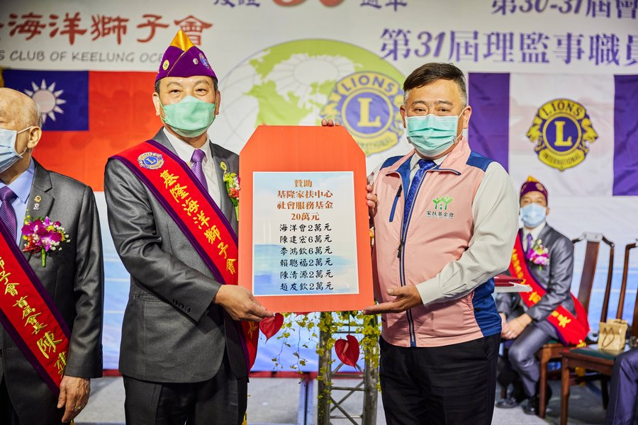

陳
陳建宏 前總監
2008–09 民國 97–98 年度國際獅子會 300A5 區總監，為本會最高榮耀。亦曾任第一分區主席、第一專區主席及區秘書長。
秉承國際獅子會「We Serve」之精神，以海洋之寬廣包容為心，深根基隆、服務社區。本屆全年共 26 次例會（隔週三晚間），推動中秋送愛 50 戶、冬令物資 30 戶、海岸淨灘、青銀共融四大方向。

基隆海洋獅子會成立於 1991 年，由一群心繫公益的企業領袖共同創立，隸屬國際獅子會 300A5 區。三十餘年來，我們秉持「服務先於己 (We Serve)」之精神，深耕弱勢扶助、教育獎助、災難救助、健康促進等公益領域。
海洋之名，象徵著我們的視野——寬廣、深邃、流動不息。每一位會員都是這片海洋裡的浪花，匯聚成推動社會前行的力量。
國際獅子會四大精神，鐫刻於每一面會旗、每一場例會。




本會獅兄歷任國際獅子會 300A5 區職務，為基隆獅界之光。
2008–09 民國 97–98 年度國際獅子會 300A5 區總監，為本會最高榮耀。亦曾任第一分區主席、第一專區主席及區秘書長。
2008–09 F 區事務長、2012–13 第一分區主席、2013–14 第一專區主席、2014–15 300A5 區年會主席。
2014–15 300A5 區東海岸獅訊總編輯、台灣總會中文版獅子會刊編輯。本會 30 週年紀念特刊總編輯。
第 30-31 屆會長交接慶典中，獅友合力捐獻完成的三項具名公益。

海洋會 2 萬 · 陳建宏 6 萬 · 李鴻欽 6 萬 · 賴聰福 2 萬 · 陳清源 2 萬 · 趙友欽 2 萬。

海洋會 2 萬 · 陳建宏 2 萬 · 李鴻欽 2 萬 · 劉慶璋 2 萬 · 陳坤田 2 萬 · 簡枝文 1 萬 · 賴聰福 1 萬。

由本會理監事年會主席李鴻欽前會長親自贊助，授證於 30 週年慶典舞台。
每一屆會長皆以個人之力推動公益，為下一任奠定深厚之基。